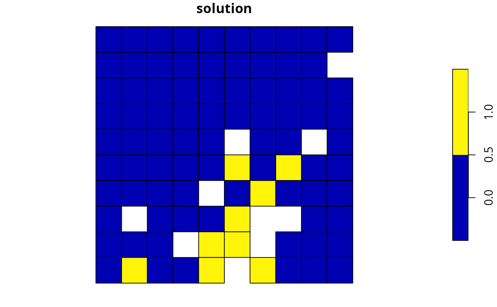
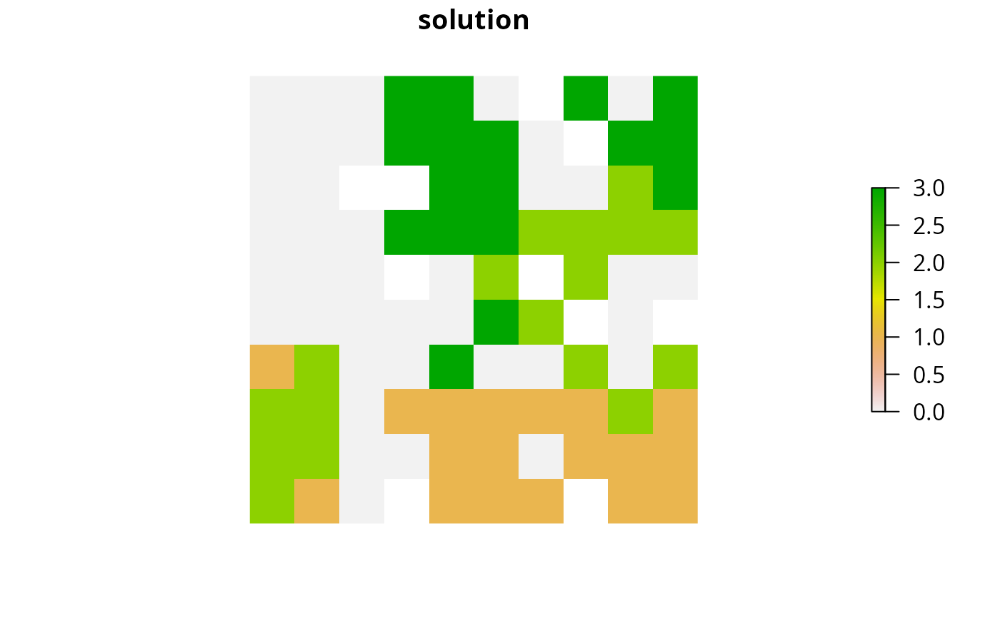

Evaluate feature representation
Source:R/eval_feature_representation_summary.R
eval_feature_representation_summary.RdCalculate how well features are represented by a solution
to a conservation planning problem().
These summary statistics are reported for each and every feature,
and each and every zone, within a conservation planning problem.
eval_feature_representation_summary(x, solution) # S4 method for ConservationProblem,numeric eval_feature_representation_summary(x, solution) # S4 method for ConservationProblem,matrix eval_feature_representation_summary(x, solution) # S4 method for ConservationProblem,data.frame eval_feature_representation_summary(x, solution) # S4 method for ConservationProblem,Spatial eval_feature_representation_summary(x, solution) # S4 method for ConservationProblem,sf eval_feature_representation_summary(x, solution) # S4 method for ConservationProblem,Raster eval_feature_representation_summary(x, solution)
Arguments
| x |
|
|---|---|
| solution |
|
Value
tibble::tibble() object describing feature representation.
Here, each row describes a specific summary statistic
(e.g. different management zone) for a specific feature.
It contains the following columns:
- summary
characterdescription of the summary statistic. The statistic associated with the"overall"value in this column is calculated using the entire solution (including all management zones if there are multiple zones). If multiple management zones are present, then summary statistics are also provided for each zone separately (indicated using zone names).- feature
charactername of the feature.- total_amount
numerictotal amount of each feature available in the entire conservation planning problem (not just planning units selected within the solution). It is calculated as the sum of the feature data, supplied when creating aproblem()object (e.g. presence/absence values).- absolute_held
numerictotal amount of each feature secured within the solution. It is calculated as the sum of the feature data, supplied when creating aproblem()object (e.g. presence/absence values), weighted by the status of each planning unit in the solution (e.g. selected or not for prioritization).- relative_held
numericproportion of each feature secured within the solution. It is calculated by dividing values in the"absolute_held"column by those in the"total_amount"column.
Solution format
The argument to solution must be in the same format as
the planning unit data in the argument to x
(e.g. in terms of data representation, dimensionality, and spatial
attributes).
For example, if the planning unit data in x is a numeric
vector, then the argument to solution must be a numeric vector
with the same number of elements.
Similarly, if the planning units in x are a data.frame, then the
argument to solution must also be a data.frame with each
column corresponding to a different zone, each row corresponding to a
different planning unit, and cell values corresponding to the solution value.
Additionally, if the planning unit data in x is
a Raster object, then the argument to
solution must also be a Raster object with
the same dimensionality (rows and columns), resolution, extent, and
coordinate reference system.
Furthermore, if the planning unit data in x is a
Spatial or sf::sf() object then the
argument to solution must also be a Spatial
or sf::sf() object (respectively) with the same spatial information
(e.g. polygons and coordinate reference system), and contain columns
corresponding to different zones, and cell values corresponding to the
solution values.
The argument to solution must also have missing (NA) values for planning
units that have missing (NA) cost values.
In other words, the solution must have missing (NA) values in the
same elements, cells, or pixels (depending on the cost data format) as the
planning unit cost data.
For example, if the planning unit data are a Raster object,
then the argument to solution must have missing (NA) values in
the same pixels as the planning unit cost data.
Similarly, if the planning unit data are a
Spatial, sf::sf(), or data.frame object, then
the solution must have missing (NA) values in the same cells
as the planning unit cost data columns.
If an argument is supplied to solution where
the missing (NA) values in the argument to solution do not match
those in the planning unit cost data, then an error will be thrown.
See also
Examples
# set seed for reproducibility set.seed(500) # load data data(sim_pu_raster, sim_pu_polygons, sim_pu_zones_sf, sim_features, sim_pu_zones_stack, sim_features_zones) # create a simple conservation planning dataset so we can see exactly # how feature representation is calculated pu <- data.frame(id = seq_len(10), cost = c(0.2, NA, runif(8)), spp1 = runif(10), spp2 = c(rpois(9, 4), NA)) # create problem p1 <- problem(pu, c("spp1", "spp2"), cost_column = "cost") %>% add_min_set_objective() %>% add_relative_targets(0.1) %>% add_binary_decisions() %>% add_default_solver(verbose = FALSE) # create a solution # specifically, a data.frame with a single column that contains # binary values indicating if each planning units was selected or not s1 <- data.frame(s = c(1, NA, rep(c(1, 0), 4))) print(s1)#> s #> 1 1 #> 2 NA #> 3 1 #> 4 0 #> 5 1 #> 6 0 #> 7 1 #> 8 0 #> 9 1 #> 10 0#> # A tibble: 2 x 5 #> summary feature total_amount absolute_held relative_held #> <chr> <chr> <dbl> <dbl> <dbl> #> 1 overall spp1 5.76 3.12 0.541 #> 2 overall spp2 33 14 0.424# let's verify that feature representation calculations are correct # by manually performing the calculations and compare the results with r1 ## calculate total amount for each feature print(setNames( c(sum(pu$spp1, na.rm = TRUE), sum(pu$spp2, na.rm = TRUE)), c("spp1", "spp2")))#> spp1 spp2 #> 5.755739 33.000000## calculate absolute amount held for each feature print(setNames( c(sum(pu$spp1 * s1$s, na.rm = TRUE), sum(pu$spp2 * s1$s, na.rm = TRUE)), c("spp1", "spp2")))#> spp1 spp2 #> 3.116052 14.000000## calculate relative amount held for each feature print(setNames( c(sum(pu$spp1 * s1$s, na.rm = TRUE) / sum(pu$spp1, na.rm = TRUE), sum(pu$spp2 * s1$s, na.rm = TRUE) / sum(pu$spp2, na.rm = TRUE)), c("spp1", "spp2")))#> spp1 spp2 #> 0.5413818 0.4242424#> id cost spp1 spp2 solution_1 #> 1 1 0.2000000 0.8288314 4 1 #> 2 2 NA 0.7115770 3 NA #> 3 3 0.8336000 0.2820609 1 0 #> 4 4 0.7250118 0.8928427 6 0 #> 5 5 0.9753142 0.7647062 1 0 #> 6 6 0.4676038 0.1643470 4 0 #> 7 7 0.8122781 0.7320744 3 0 #> 8 8 0.2056958 0.2531062 6 0 #> 9 9 0.5121819 0.5083795 5 0 #> 10 10 0.9254660 0.6178138 NA 0# calculate feature representation in this solution r1_2 <- eval_feature_representation_summary( p1, s1_2[, "solution_1", drop = FALSE]) print(r1_2)#> # A tibble: 2 x 5 #> summary feature total_amount absolute_held relative_held #> <chr> <chr> <dbl> <dbl> <dbl> #> 1 overall spp1 5.76 0.829 0.144 #> 2 overall spp2 33 4 0.121# build minimal conservation problem with raster data p2 <- problem(sim_pu_raster, sim_features) %>% add_min_set_objective() %>% add_relative_targets(0.1) %>% add_binary_decisions() %>% add_default_solver(verbose = FALSE) # solve the problem s2 <- solve(p2) # print solution print(s2)#> class : RasterLayer #> dimensions : 10, 10, 100 (nrow, ncol, ncell) #> resolution : 0.1, 0.1 (x, y) #> extent : 0, 1, 0, 1 (xmin, xmax, ymin, ymax) #> crs : NA #> source : memory #> names : layer #> values : 0, 1 (min, max) #># calculate feature representation in the solution r2 <- eval_feature_representation_summary(p2, s2) print(r2)#> # A tibble: 5 x 5 #> summary feature total_amount absolute_held relative_held #> <chr> <chr> <dbl> <dbl> <dbl> #> 1 overall layer.1 83.3 8.91 0.107 #> 2 overall layer.2 31.2 3.13 0.100 #> 3 overall layer.3 72.0 7.34 0.102 #> 4 overall layer.4 42.7 4.35 0.102 #> 5 overall layer.5 56.7 6.01 0.106# } # build minimal conservation problem with polygon (Spatial) data p3 <- problem(sim_pu_polygons, sim_features, cost_column = "cost") %>% add_min_set_objective() %>% add_relative_targets(0.1) %>% add_binary_decisions() %>% add_default_solver(verbose = FALSE) # \dontrun{ # solve the problem s3 <- solve(p3) # print first six rows of the attribute table print(head(s3))#> cost locked_in locked_out solution_1 #> 1 215.8638 FALSE FALSE 0 #> 2 212.7823 FALSE FALSE 0 #> 3 207.4962 FALSE FALSE 0 #> 4 208.9322 FALSE TRUE 0 #> 5 214.0419 FALSE FALSE 0 #> 6 213.7636 FALSE FALSE 0# calculate feature representation in the solution r3 <- eval_feature_representation_summary(p3, s3[, "solution_1"]) print(r3)#> # A tibble: 5 x 5 #> summary feature total_amount absolute_held relative_held #> <chr> <chr> <dbl> <dbl> <dbl> #> 1 overall layer.1 74.5 8.05 0.108 #> 2 overall layer.2 28.1 2.83 0.101 #> 3 overall layer.3 64.9 6.65 0.103 #> 4 overall layer.4 38.2 3.87 0.101 #> 5 overall layer.5 50.7 5.41 0.107# plot solution spplot(s3, zcol = "solution_1", main = "solution", axes = FALSE, box = FALSE)# } # build multi-zone conservation problem with raster data p4 <- problem(sim_pu_zones_stack, sim_features_zones) %>% add_min_set_objective() %>% add_relative_targets(matrix(runif(15, 0.1, 0.2), nrow = 5, ncol = 3)) %>% add_binary_decisions() %>% add_default_solver(verbose = FALSE) # \dontrun{ # solve the problem s4 <- solve(p4) # print solution print(s4)#> class : RasterStack #> dimensions : 10, 10, 100, 3 (nrow, ncol, ncell, nlayers) #> resolution : 0.1, 0.1 (x, y) #> extent : 0, 1, 0, 1 (xmin, xmax, ymin, ymax) #> crs : NA #> names : layer.1.1, layer.1.2, layer.1.3 #> min values : 0, 0, 0 #> max values : 1, 1, 1 #># calculate feature representation in the solution r4 <- eval_feature_representation_summary(p4, s4) print(r4)#> # A tibble: 20 x 5 #> summary feature total_amount absolute_held relative_held #> <chr> <chr> <dbl> <dbl> <dbl> #> 1 overall feature_1 250. 43.7 0.175 #> 2 overall feature_2 93.6 16.2 0.173 #> 3 overall feature_3 216. 36.1 0.167 #> 4 overall feature_4 128. 23.4 0.183 #> 5 overall feature_5 170. 30.4 0.179 #> 6 zone_1 feature_1 83.3 16.0 0.192 #> 7 zone_1 feature_2 31.2 5.13 0.164 #> 8 zone_1 feature_3 72.0 13.0 0.181 #> 9 zone_1 feature_4 42.7 7.06 0.166 #> 10 zone_1 feature_5 56.7 11.2 0.197 #> 11 zone_2 feature_1 83.3 14.7 0.177 #> 12 zone_2 feature_2 31.2 5.03 0.161 #> 13 zone_2 feature_3 72.0 11.7 0.163 #> 14 zone_2 feature_4 42.7 8.02 0.188 #> 15 zone_2 feature_5 56.7 10.4 0.183 #> 16 zone_3 feature_1 83.3 13.0 0.156 #> 17 zone_3 feature_2 31.2 6.08 0.195 #> 18 zone_3 feature_3 72.0 11.4 0.158 #> 19 zone_3 feature_4 42.7 8.33 0.195 #> 20 zone_3 feature_5 56.7 8.87 0.156# } # build multi-zone conservation problem with polygon (sf) data p5 <- problem(sim_pu_zones_sf, sim_features_zones, cost_column = c("cost_1", "cost_2", "cost_3")) %>% add_min_set_objective() %>% add_relative_targets(matrix(runif(15, 0.1, 0.2), nrow = 5, ncol = 3)) %>% add_binary_decisions() %>% add_default_solver(verbose = FALSE) # \dontrun{ # solve the problem s5 <- solve(p5) # print first six rows of the attribute table print(head(s5))#> Simple feature collection with 6 features and 9 fields #> geometry type: POLYGON #> dimension: XY #> bbox: xmin: 0 ymin: 0.9 xmax: 0.6 ymax: 1 #> CRS: NA #> cost_1 cost_2 cost_3 locked_1 locked_2 locked_3 solution_1_zone_1 #> 1 215.8638 183.3344 205.4113 FALSE FALSE FALSE 0 #> 2 212.7823 189.4978 209.6404 FALSE FALSE FALSE 0 #> 3 207.4962 193.6007 215.4212 TRUE FALSE FALSE 0 #> 4 208.9322 197.5897 218.5241 FALSE FALSE FALSE 0 #> 5 214.0419 199.8033 220.7100 FALSE FALSE FALSE 0 #> 6 213.7636 203.1867 224.6809 FALSE FALSE FALSE 0 #> solution_1_zone_2 solution_1_zone_3 geometry #> 1 0 0 POLYGON ((0 1, 0.1 1, 0.1 0... #> 2 0 0 POLYGON ((0.1 1, 0.2 1, 0.2... #> 3 0 0 POLYGON ((0.2 1, 0.3 1, 0.3... #> 4 0 0 POLYGON ((0.3 1, 0.4 1, 0.4... #> 5 0 0 POLYGON ((0.4 1, 0.5 1, 0.5... #> 6 0 0 POLYGON ((0.5 1, 0.6 1, 0.6...# calculate feature representation in the solution r5 <- eval_feature_representation_summary( p5, s5[, c("solution_1_zone_1", "solution_1_zone_2", "solution_1_zone_3")]) print(r5)#> # A tibble: 20 x 5 #> summary feature total_amount absolute_held relative_held #> <chr> <chr> <dbl> <dbl> <dbl> #> 1 overall feature_1 225. 40.4 0.179 #> 2 overall feature_2 83.9 13.4 0.159 #> 3 overall feature_3 195. 33.9 0.174 #> 4 overall feature_4 114. 18.3 0.161 #> 5 overall feature_5 154. 27.8 0.181 #> 6 zone_1 feature_1 75.1 14.3 0.190 #> 7 zone_1 feature_2 28.0 4.88 0.174 #> 8 zone_1 feature_3 65.0 12.2 0.188 #> 9 zone_1 feature_4 38.0 6.25 0.164 #> 10 zone_1 feature_5 51.2 9.55 0.187 #> 11 zone_2 feature_1 75.1 15.0 0.200 #> 12 zone_2 feature_2 28.0 4.61 0.165 #> 13 zone_2 feature_3 65.0 13.2 0.204 #> 14 zone_2 feature_4 38.0 5.65 0.149 #> 15 zone_2 feature_5 51.2 10.3 0.200 #> 16 zone_3 feature_1 75.1 11.1 0.147 #> 17 zone_3 feature_2 28.0 3.89 0.139 #> 18 zone_3 feature_3 65.0 8.45 0.130 #> 19 zone_3 feature_4 38.0 6.42 0.169 #> 20 zone_3 feature_5 51.2 7.96 0.155# create new column representing the zone id that each planning unit # was allocated to in the solution s5$solution <- category_vector( s5[, c("solution_1_zone_1", "solution_1_zone_2", "solution_1_zone_3")]) s5$solution <- factor(s5$solution) # plot solution plot(s5[, "solution"])# }